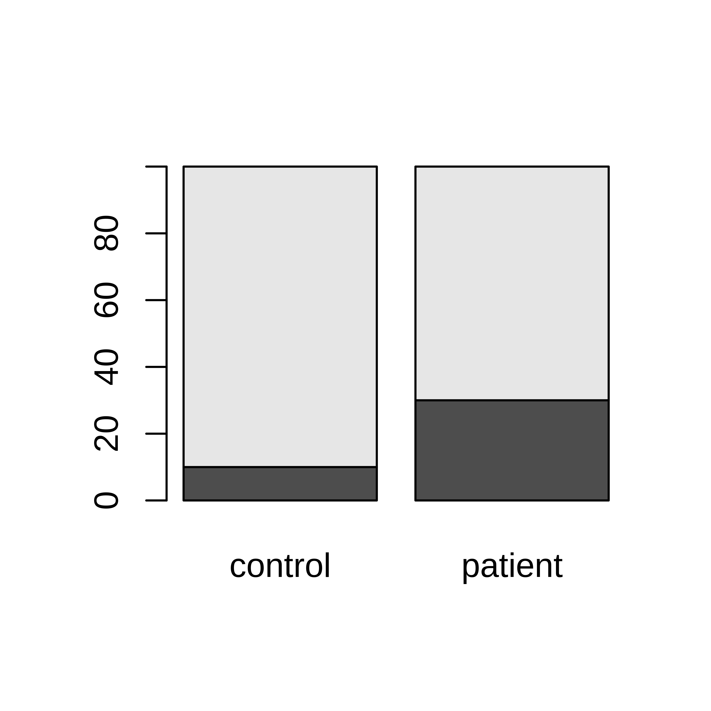
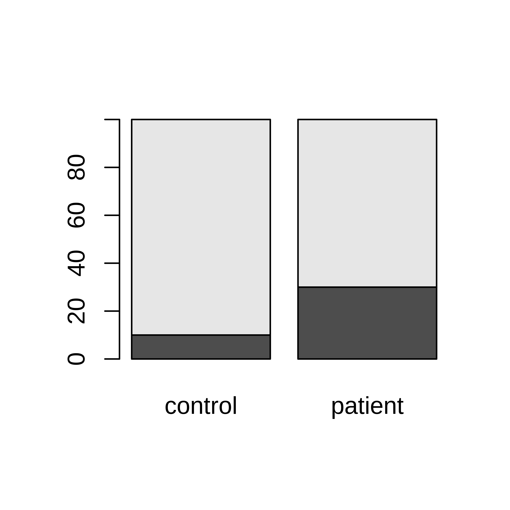

2 Categorical data
2.1 Data summarization and plots
Categorical data can be summarized by counting the number of observations of each category and summarizing in a frequency table or bar plot. Alternatively, the proportions (or percentages) of each category can be calculated.
Example 2.1 Ten lab mice
Observe gender and weight of your ten lab mice and summarize.If you want to follow this example, you can download the data here; mice.csv. You get the subset used in this example by the following commands;
## first read the full data set into R
mice <- read.csv("mice.csv")## Then extract the specific subset used in this example
m10 <- subset(mice, subset=week==5 & id %in% 1:10, select = c(id, gender, weight))In this example we have only ten observations (mice) and the full data can actually be shown in a table.
| id | gender | weight | |
|---|---|---|---|
| 1 | 1 | male | 19 |
| 21 | 2 | male | 21 |
| 41 | 3 | female | 18 |
| 61 | 4 | male | 20 |
| 81 | 5 | male | 21 |
| 101 | 6 | male | 17 |
| 121 | 7 | female | 18 |
| 141 | 8 | male | 24 |
| 161 | 9 | male | 22 |
| 181 | 10 | female | 18 |
We are interested in the gender distribution in our group of mice. Count the frequency of male/female mice and summarize in a table. Also, the fraction or percentage can be useful.
| gender | n | percent (%) |
|---|---|---|
| female | 3 | 30 |
| male | 7 | 70 |
The frequencies can also be shown in a barplot.
ggplot(m10, aes(x=gender)) + geom_bar()
barplot(table(m10$gender))
Figure 2.1: The number of male and female mice shown in barplots generated using ggplot and basic R graphics.
Example 2.2 Left handedness
You are interested in whether left-handedness is associated to a disease you study and observe left-handedness among 30 patients as well as among 40 healthy controls;patients: {L, L, L, R, L, R, R, L, L, R, R, R, R, R, L, R, R, R, R, R, R, R, R, R, R, L, L, R, R, R}
controls: {R, L, R, R, L, R, R, R, R, R, R, R, R, R, R, R, R, R, R, R, R, R, L, R, R, L, R, R, R, R, R, R, R, R, R, R, R, R, R, R}
Summarized as
| group | Total n | Left handed (%) |
|---|---|---|
| control | 40 | 4 (10%) |
| patient | 30 | 9 (30%) |
or in a contingency table;
| L | R | Sum | |
|---|---|---|---|
| control | 4 | 36 | 40 |
| patient | 9 | 21 | 30 |
| Sum | 13 | 57 | 70 |
Data can be summarized in barplots in several ways;
## Using ggplot to create barplots
ggplot(hand, aes(x=group, fill=handedness)) + geom_bar()
ggplot(hand, aes(x=group, fill=handedness)) + geom_bar(position="dodge")
ggplot(hand, aes(x=group, fill=handedness)) + geom_bar(position="fill") + ylab("Fraction")
## Using basic R graphics to create barplots
tab <- table(hand$handedness, hand$group)
barplot(tab)
barplot(tab, beside=TRUE)
tabperc <- tab
tabperc[,1] <- 100*tab[,1]/sum(tab[,1])
tabperc[,2] <- 100*tab[,2]/sum(tab[,2])
barplot(tabperc) 

Figure 2.2: Left-handedness in patient and control groups.